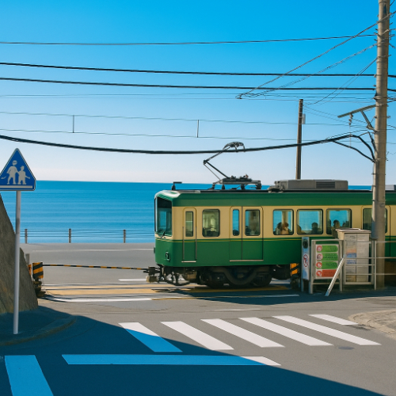

Enoden – Scenic Coastal Train from Kamakura to Enoshima
Enoden (江ノ電) is the nickname for the Enoshima Electric Railway, a beloved local train that runs between Kamakura and Fujisawa in Kanagawa Prefecture. This charming single-track railway offers a unique and nostalgic journey along the coast, passing through quiet neighborhoods, historic sites, and stunning ocean views.
Ride Along Japan’s Scenic Coast
The Enoden line travels just over 10 kilometers, but the experience is unforgettable. With parts of the track running directly beside the Shonan coastline, you can enjoy picturesque views of the Pacific Ocean from the train. One of the most famous spots is near Kamakura Koko Mae Station, known for its iconic railroad crossing featured in the anime Slam Dunk.
Explore the Stops Along the Line
Key attractions along the route include the Great Buddha of Kamakura (Daibutsu), Hase-dera Temple, and the scenic Enoshima Island. Whether you're visiting historic temples or relaxing by the beach, the Enoden line provides convenient access to some of Kanagawa’s most beloved destinations.
Perfect for Photography and Nostalgia
The Enoden’s vintage green-and-beige trains, narrow tracks, and street-level segments make it a favorite for train lovers and photographers. The combination of retro trains and seaside backdrops creates perfect photo opportunities, especially during sunset near the ocean-facing stations.
How to Ride the Enoden
- 🌸 From Kamakura: Take the Enoden directly from Kamakura Station toward Enoshima or Fujisawa
- 🌸 From Tokyo: Take the JR Yokosuka Line to Kamakura, then transfer to the Enoden (approx. 1 hour)
- 🌸 Full line: Takes about 35 minutes from Kamakura to Fujisawa
- 🌸 Popular stations: Kamakura, Hase, Gokurakuji, Kamakura Koko Mae, Enoshima
- 🌸 Best photo spots: Kamakura Koko Mae crossing, ocean-view sections near Shichirigahama, inside the retro train
Why Enoden is a Must-Experience Train Ride
Whether you're a fan of anime, a lover of slow travel, or simply seeking a peaceful seaside journey through Japan's coastal towns, the Enoden is an unforgettable way to explore Kamakura and Enoshima. Its nostalgic charm and coastal beauty make it one of Japan’s most scenic and iconic train rides.
Tags: Enoden, Kamakura, Enoshima, scenic train ride Japan, Enoshima Electric Railway, Slam Dunk train spot, Shonan coast, Kamakura sightseeing
Planning to ride the Enoden?
To make the most of your Enoden adventure, we recommend booking a private guide who knows the best stops, stories, and photo spots along the route. All our guides are licensed professionals officially recognized by the Japanese government. Please contact your selected guide in advance to confirm availability and personalize your Enoden experience.